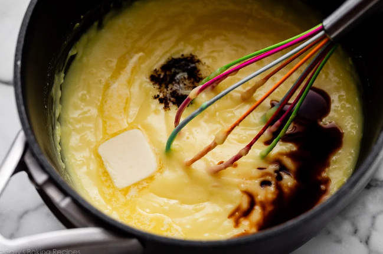
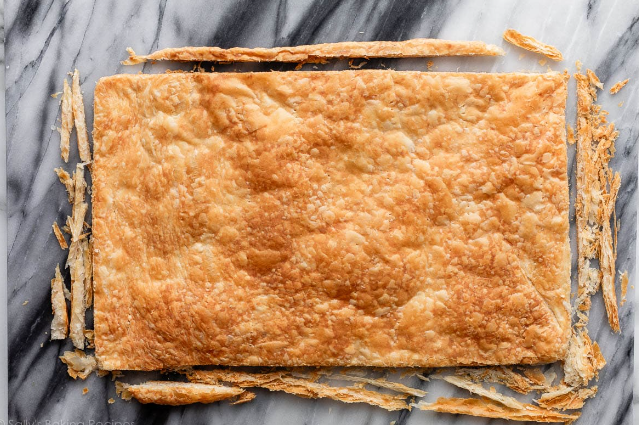

INGREDIENTS
Instructions
Step 1
Prepare rough puff pastry
Prepare homemade rough puff pastry dough through 2nd refrigeration. If using store-bought frozen puff pastry, thaw according to package directions. Keep either dough in the refrigerator until step 7 below.
Step 2
Make the pastry cream
Make the pastry cream: In a large heatproof bowl (preferably with a pour spout), whisk the egg yolks and cornstarch together with a fork. It may not look like it will all come together (it will be dry at first), but keep mixing until the mixture is thick and combined. If it’s not coming together at all, add a few drops of the milk you need in step 3 to bring together. Set aside at room temperature.

Step 3
Combine the milk and sugar
Combine the milk and sugar in a medium saucepan over medium heat. Whisk until the sugar has dissolved, then bring to a gentle simmer. Remove from heat. Pour the warm milk and sugar mixture in a slow and steady stream into the egg yolk and cornstarch mixture, whisking the entire time. Keep those egg yolks moving so they don’t scramble. Over a sieve, to strain out any egg yolk solids that may have formed during tempering, pour the mixture back into the saucepan.
Step 4
Heat and whisk mixture
Return the saucepan to medium heat, and whisk constantly. The mixture will be frothy on the surface at first, and then it will begin to thicken quickly and large bubbles will begin to burst on the surface. This usually takes about 1–2 minutes. Stand back and use caution. Let the bubbles burst for about 20 seconds, or until the mixture has thickened into a custard- or pudding-like consistency. (For a more accurate test, the custard is done when the temperature reaches 185–190°F (85–88°C).) Remove from heat. Whisk in butter, vanilla extract, vanilla bean seeds, and a pinch of salt. Cool for 10 minutes.
Step 5
Refrigerate pastry cream
Transfer the pastry cream from the saucepan to a heatproof bowl and place a piece of plastic wrap or parchment directly on the surface of the custard, to prevent a skin from forming. Refrigerate for at least 3 hours, and up to 24 hours.
Step 6
Preheat oven
Preheat oven to 400°F (204°C). Line a 12×17-inch baking sheet (half sheet pan) with parchment paper. Have a second baking sheet and more parchment paper out as well. Set aside.
Step 7
Shape the dough
Shape the dough: On a floured work surface using a floured rolling pin, roll pastry dough into a rectangle about 11×16 inches in size.
Step 8
Dock the dough surface
Transfer the dough to the lined baking sheet. Dock the surface with a fork to allow steam to escape. Place a second piece of parchment paper on top of the pastry dough. Set a second baking sheet, filled with pie weights (or dried beans, or other options see recipe Note below) on top. Bake for 20 minutes with pan & weights on top. Remove from oven and carefully remove the top weighted baking sheet and the top piece of parchment. Return the uncovered pastry to the oven for 7–9 more minutes, or until golden brown. Remove from the oven and cool for 20 minutes on the pan, and then carefully lift it and place on a cooling rack to cool completely.

Step 9
Finish the cream filling
Finish the cream filling: Using a handheld or stand mixer fitted with a whisk attachment, whip the cold heavy cream on medium-high speed until medium peaks form, about 3 minutes. Add the chilled pastry cream to the bowl with the whipped cream. Beat on low speed until just combined and smooth. Do not over-mix. Cover and refrigerate for at least 1 hour and up to 4 hours.

Step 10
Assemble the pastries
Assemble the pastries: Using a large, very sharp knife, trim around the sides of the cooled pastry to straighten up any uneven edges. Use the knife to cut the pastry into 15 squares roughly uniform in size. NOTE: The pastry will shrink some while baking. After starting with dough rolled out to 11×16 inches, after baking it typically ends up around 9–10×14–15 inches. So if you have a baked pastry that’s 9×15 inches (after trimming the edges), your 15 squares will be 3×3 inches. If your pastry is a slightly different size, don’t panic! Use a measuring tape or ruler to measure the sides to determine exactly how wide to space your cuts. Measure the long side and divide by 5, then measure the short side and divide by 3.
Step 11
Make & add the topping
Make & add the topping: In a small bowl, whisk together the sifted confectioners’ sugar, milk, and vanilla until combined and smooth. Place the chopped chocolate in a small microwave-safe bowl or liquid measuring cup. Melt in 20-second increments in the microwave, stirring after each increment, until completely melted and smooth. Transfer the melted chocolate to a squeeze bottle or a piping bag fitted with a small round tip, or use a small plastic sandwich bag and cut off a bottom corner. Place 5 pastry squares on a wire rack set over parchment paper. With a spoon or icing spatula, spoon and spread the vanilla icing on one square. Before the icing has a chance to set, pipe 4 lines of melted chocolate across each top. Use a toothpick to create a chevron design, dragging it across the stripes in a perpendicular direction. Alternate directions with the toothpick, wiping the toothpick end with a paper towel in between each pass. Repeat with the remaining 4 pastry squares.

Step 12
Assemble the mille-feuille
Assemble the mille-feuille: Fit a pastry/piping bag with a large round tip. Or, you can simply use a large plastic bag and snip off a bottom corner with scissors. Starting with one of the (plain/un-iced) pastry squares, pipe 3 dollops of cream filling in 3 rows (9 dollops total). Place another (plain) pastry square on top, pressing down very lightly. Repeat the piping of 9 dollops on the next layer. Place one of the decorated (iced) pastry squares on top of the second layer of cream filling. Repeat with the remaining pastry squares; you will have 5 assembled pastries. Refrigerate uncovered for at least 30 minutes before serving, or up to 8 hours. The soft filling will spill out the sides when you cut or bite into it, and that’s expected.